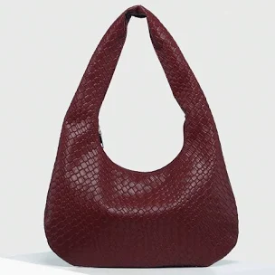

Background
Fashion trend forecasters spend their lives determining what styles will be trending based on underlying cultural shifts. Not only do they use data to identify patterns and create insights, they are able to connect the dots between history, identity, and lived observation, to predict the next big fashion trend.
For example, the WhoWhatWear blog, indicated that “fashion, like all industries, follows society’s course. Claiming that as we are living in the “dark ages,” our wardrobes will match the energy, leading to the trend of dark and gothic fall fashion.
In fashion, trends are predicted from just data points. They’re the product of cultural barometers.
Today, we’ll test whether AI can generate reasoning in fashion trend forecasting beyond what it sees in massive datasets like e-commerce sales, social media hashtags, and fashion show transcripts. Can LLMs capture the cultural narrative in fashion?
Setup
I used GPT-4o and prompted it with the following:
Prompt: I’m shopping for Winter 2025. Can you predict what will be trendy in the fashion world?
ChatGPT gave me a list of the following 10 fashion trends based on its forecasting abilities 1. Oversized Moto Jacket 2. Minimalist Flat Knee-High Boots 3. Balloon Pants 4. Victorian Lace 5. Matching Sets 6. Bold Color Combinations 7. Cozy Maximalism 8. Faux Fur 9. Opera Coats 10. Scarf Details
While ChatGPT was able to grab what it believed to be the new trends for Winter 2025 from various online fashion sources. I then asked ChatGPT to generate its own predictions, wondering if instead ChatGPT would resort to analyzing datasets rather than pulling from existing trend predictions.
ChatGPT gave me a new list of 10 fashion trends with their corresponding reasonings.
- Tech-Enhanced Outerwear: As wearable tech becomes mainstream, consumers are looking for clothing that combines style and functionality. Winter outerwear is the perfect canvas for this, merging comfort, warmth, and utility.
- Architectural Boots: Footwear is increasingly seen as a statement piece. Minimalism is taking a backseat to bold, art-inspired designs, appealing to Gen Z and social media-savvy shoppers.
- Maxi Knit Dresses with Layered Textures: Comfort remains key, but consumers want elevated casualwear that looks put-together for hybrid work and online visibility.
- Neo-Animal Prints: Prints are getting more playful and futuristic, moving beyond traditional neutrals, reflecting the desire for self-expression post-pandemic.
- Color-Blocking with Neon Accents: Consumers want winter clothes that stand out without screaming “loud.” Strategic neon placement energizes outfits while keeping them wearable.
- Convertible Accessories: With sustainability and versatility top-of-mind, multi-use items allow people to reduce wardrobe clutter while staying fashionable.
- Oversized Layered Shearling: Shearling offers warmth and luxury, and oversized silhouettes satisfy the ongoing love for “cocooning” and comfort-focused fashion.
- Wide-Leg Utility Trousers: Utility meets streetwear—functionality is still fashionable, but consumers want it reimagined with a high-fashion edge.
- Mini Bags with Maximal Impact: Accessories are evolving into art pieces. Mini bags are eye-catching and perfect for social media aesthetics.
- Mood-Adaptive Fabrics: Fashion is becoming interactive. Consumers love novelty and personalization, and these fabrics deliver a futuristic, playful edge for winter wardrobes.
Takeaways
Although ChatGPT did a great job synthesizing trend predictions from across the internet, it struggled a bit more to add a human touch to its own predictions. LLMs are very valuable tools in identifying trend patterns and generating culturally informed ideas, however they lack lived experience and nuanced cultural intuition that keeps them from predicting the next “It-bag”. Because of this, humans still lead the way in fashion trend forecasting.
Keep calm and keep predicting,
Mallika